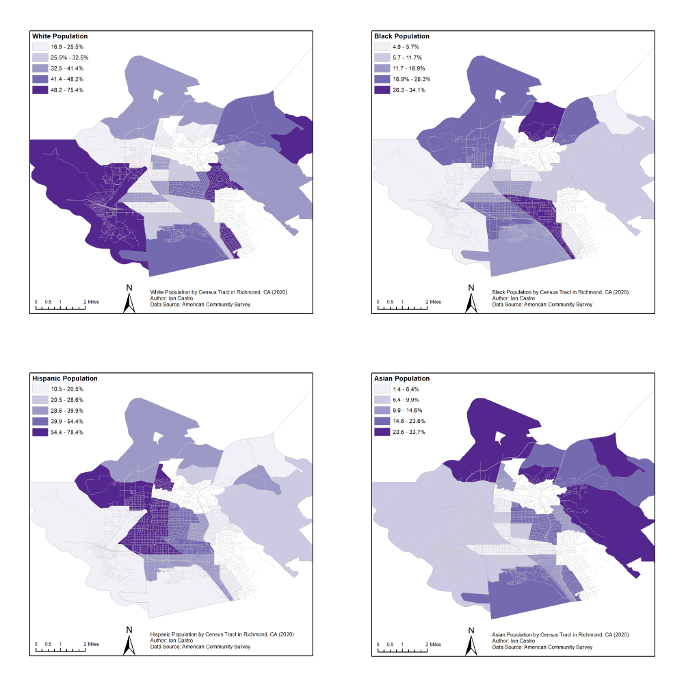

To tell this story, let's take a look at Richmond, California
Zooming in on Richmond, California, we'll help you untangle the
complexities of the Housing Crisis by breaking down the data and telling
you a story. Richmond presents a compelling case study to understand the
housing crisis. Richmond is a city in the East San Francisco Bay Area.
It has been racially and economically diverse since it's founding, but
like many cities it has fault lines. There's a history of housing
inequity dating back to pre-WWII and a large corporate industry
presence, both of which have contributed to early stages of
gentrification and displacement of the city's Black population.
Let's break down this problem by looking at the current housing in
Richmond.
How does housing inequity impact people differently?
First, let's see how housing in Richmond looks now.
The Problem Today
Disparate Impacts, typically falling on racial lines
This is the City of Richmond's zoning map for [YEAR]. Zoning laws define
how land is broken up for various purposes, such as commercial use,
residential use, or mixed (commercial and residential) use. For housing,
they can also specify what kinds of homes can be built and where - for
example, multi-family apartment complexes versus single-family homes.
Let's see how zoning relates to race.
[INSERT 2010 OR 2020 MAP OF RACIAL GROUPS BY TRACT OVERLAYED ON ZONING
MAP]

[EXPLAIN CORRELATION BETWEEN RACE AND ZONE - NEED DATA CHECK HERE
Single-Family Zoning is correlated with race: higher SFZ %s are seen in
cities that have high White populations - we can show racial groups in
context, as OBI does, or highlight values across the two groups (as in
our design)]
Much of this racial disparity is due to the historical legacy of
redlining in the Bay Area.
Redlining refers to the discriminatory practice by banks and government
agencies in denying or withholding home loans in “red” (“hazardous” )
neighborhoods. This process often excluded racial minorities, especially
Black residents, from living in neighborhoods.
[INSERT REDLINING MAP IF WE CAN FIND ONE?]
Zones, therefore, are often correlated with redlined neighborhoods.
Studies from the Othering and Belonging Institute show that
single-family zoning is strongly correlated with neighborhood
characteristics that have a direct impact on residents. Residents in
single-family zones are correlated to have access to better schools,
higher incomes, lower property, and higher property values. These
factors have a compounding effect that can affect opportunities for
attaining better outcomes throughout their lives.
[INSERT POVERTY BY TRACT MAP, ZONING DISPARITIES: see below for
analysis]
[PLACE HOLDER FOR SFZ vs. MF/MIX/COMMERCIALZ]
Social economic outcome differences between the two groups: Cities in SF
Bay area with high-SFZ feature better reading and math proficiency,
lower prevalence of free/reduced school lunch, better high school and
college graduation rates (current analysis is for cities, we will change
it to tracts inside Richmond) Higher SFZ is correlated with better
environmental conditions, e.g., Diesel Emissions, Drinking Water
Pollution, Pesticides, PM2.5 exposure, Toxis Releases, Traffic Pollution
[PLACE HOLDER FOR BUTTON - EVICTION DATA VIZ ]
This is just the beginning
This is a big problem space with no one “one size fits all” solution.
When you think of all the work that needs to be done to help fix this
problem, it might seem like a maze trying to find where to begin.
Well, you just took the first step, empowering action by understanding
the history that led to the housing crisis, how it manifests today, and
what solutions might look like.
Creating informed citizens will lead to informed action, action that can
make a difference.
Let's imagine a better future, here are a few steps to take to make that
happen
Thank you for allowing us to educate you on the housing crisis. If you
are feeling empowered and ready to do more, we’ve compiled a list of
things you can do to become active in finding a solution: